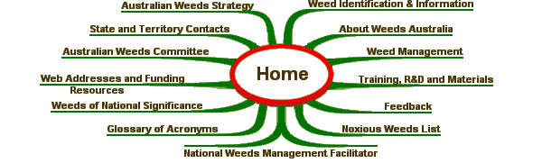

Privacy Statement
Privacy Statement
|
Information Collection and Use The Australian Weeds Committee (AWC) is the sole owner of the information collected on this site unless it has been obtained from another party. We will not sell, share, or rent this information to others in ways different from what is disclosed in this statement. Site Visits We use Internet Protocol (IP) addresses to analyse trends, administer the site, track users' movement, and gather general information which is only analysed collectively. We do not link IP addresses to personal information. Sharing We may share consolidated information with our partners, but this can not identify an individual person. Links This web site contains links to other sites. You should be aware that the AWC is not responsible for the privacy practices of such other sites. You are encouraged to read the privacy statements of every site you visit. This privacy statement only applies to this web site. Security Every precaution is taken to protect your privacy when you visit this site and personally sensitive information is not collected or held by the AWC. Our site is held in a secure physical environment and staff have restricted access on a "needs only" basis. If you require any further information then please send an email to webmaster@weeds.org.au. |
|
|
SITE MAP 
Australian Weeds Strategy | Weed Identification | State and Territory Contacts | About Weeds Australia |
|
Site Content: National Weeds Management Facilitator Telephone: (03) 6344 9657 Fax: (03) 6343 1877 |
Site Design - Computer Support Tasmania Site Operation - John Thorp Australia |
|
| © Australian Weeds Committee |